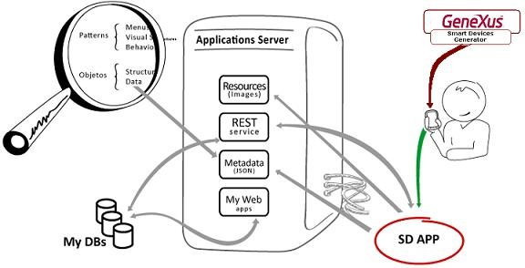
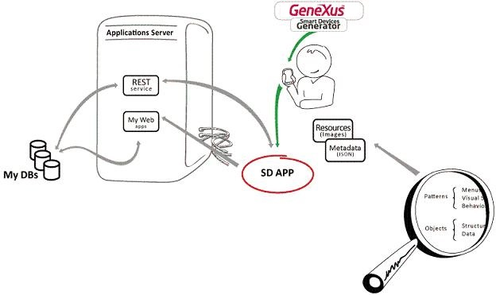

Native Mobile applications installed on devices read Metadata in order to consume REST Web Services and generate the forms in the device. These applications create a UI that is also based on Resources, in addition to Metadata. Basically, Resources contain the images that will be used by the application and are hosted in the application server; in turn, Metadata, which is contained in JSON files, has information related mainly to Patterns and Objects. For example, if the application uses Patterns, there will be Metadata containing the knowledge about those Patterns, such as menus, visual structures, behavior (given, for instance, by actions), and so on. The same happens with objects.  Running under Knowledge Base Navigator (KBN) control (image above) The data required by the application residing in the device will be obtained by consuming REST services, which will access the user’s DB and return the requested information to the application. Note that this is different from what was said about Resources and Metadata, which are accessed as a simple GET via HTTP / HTTPS. When the application is installed on the device (without KBN control), it doesn't need to access the server to obtain the metadata and resources which are compiled in the program.  Running directly from devices without the KBN control (image above) See AlsoOffline Native Mobile applications architecture (since GeneXus X Evolution 3) |